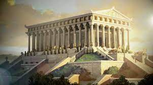

| The Temple of Artemis at Ephesus was located on the western coast of Asia Minor (modern Turkey) and built in the 6th century BCE. Such was its tremendous size, double the dimensions of other Greek temples including the Parthenon, that it was soon regarded as one of the Seven Wonders of the Ancient World.
Destroyed by a deliberate fire in the 4th century BCE and then rebuilt, the great Ionic temple survived until Late Antiquity and the Gothic invasion of c. 267 CE. Once again rebuilt, in 401 CE it was torn down for the last time by a Christian mob. Today only the foundations and a solitary column stand as a reminder of the site where once stood the greatest temple in the ancient Mediterranean.
Artemis & Ephesus
Ephesus (or Ephesos) was a Greek colony on the eastern coast of Asia Minor founded in the 8th century BCE, although there had been Greek settlers in the area from c. 1200 BCE. The Greek goddess Artemis (Diana to the Romans) was particularly important to the Ephesians, indeed her birthplace was considered by them as nearby Ortygia (for other Greeks it was Delos). Artemis was the goddess of chastity, hunting, wild animals, forests, childbirth, and fertility. The goddess' cult at Ephesus included eastern elements (borrowed from goddesses such as Isis, Cybele, and the “Mistress of the Animals”), as did her representation in art, with surviving statues, unlike elsewhere in Greece, being covered in eggs as symbols of her role as a fertility goddess. Hence, the goddess worshipped at Ephesus is often referred to as Artemis Ephesia. |  |